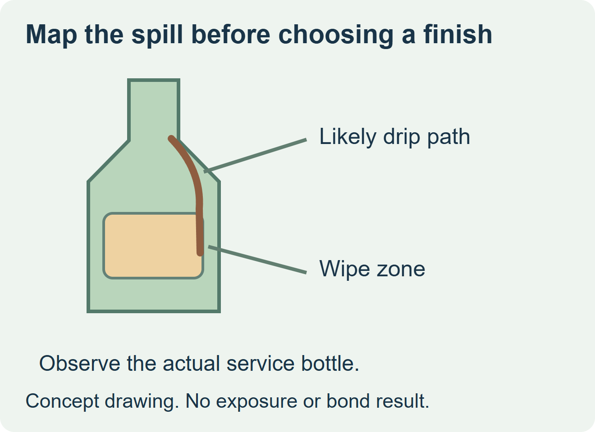
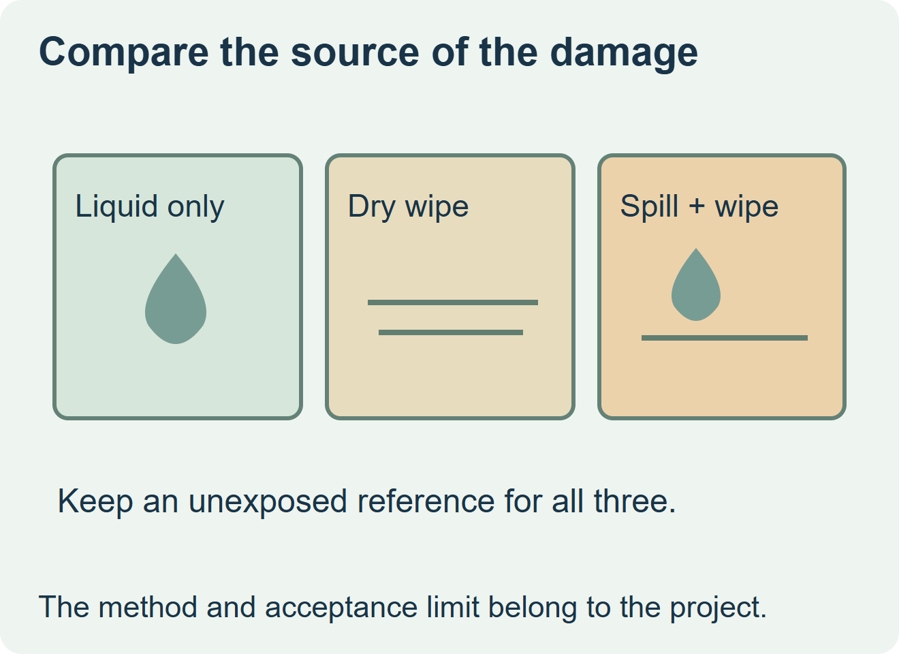

When spilled spirits repeatedly reach the label, request evidence on the actual printed construction with the relevant liquid and service wipe. Consider moving critical print if the drip path is predictable and another usable panel is available. If the position is fixed, compare identified coating and laminate options on decorated bottles.


Ask what the existing evidence actually exposed
A dry rub test can assess abrasion, while contact with a liquid can change color or soften a printed layer under different conditions. A wet wipe combines a liquid with friction. ISO 2836 describes methods for evaluating print resistance to different agents, including liquids and solvents. Ask the specialist which method and specimen are relevant. Use its scope for print evidence. Keep the real bottle service trial and any food-contact review with the responsible teams. ISO 2836 scope for print resistance
Mark where the liquid lands, where it reaches cut edges and where staff wipe the bottle. Identify the exact beverage or approved cleaning product involved. Ask about actual use frequency and how the bottle is handled. The converter can then quote the ink and protective layer together for the defined exposure.
| Comparison specimen | What it helps distinguish |
|---|---|
| Unexposed reference and exposed specimen inspected before wiping | Appearance effects of the liquid under the agreed contact conditions. |
| Matched dry-wipe comparison | Mechanical damage or transfer without the liquid. |
| Matched spill and service wipe | The combined effect on legibility, print transfer and attachment. |
| Alternative label position or finish on the actual bottle | Whether it solves the stated problem across the agreed conditions. |


Choose a response based on the observed location
If the coated face changes appearance before wiping, have the converter compare the ink and protection system with the actual liquid. If the face stays readable but the cut edge lifts, check the edge, label placement and bond as a separate issue. Laminate coverage still leaves a die-cut boundary. Ask the supplier which materials can represent the real printed label and finish.
For a hypothetical distillery, drops gather below the neck and track along one front corner. Staff wipe across that spot. Try a position that keeps the key print out of the track if the design and intended display allow it. If it must remain, define the accepted appearance and handling result and compare the full construction on the same bottle. Record observations and use them with the actual quoted costs.
Keep an approved physical reference
Keep the face stock, ink build, finish coverage, bottle item and applied position together with the agreed test and sample. Revisit the exposed region when print, finish or service conditions change.
Discuss the unresolved label requirement
Send the actual bottle, drip and wipe locations, beverage or approved cleaner reference, contact sequence, current face and finish, symptoms and quantities. Review wine and spirits label options and prepare a label specification inquiry. The contact page opens an email draft and lists email or WhatsApp for attachments. Supply, proof options, testing, pricing and timing require project confirmation.